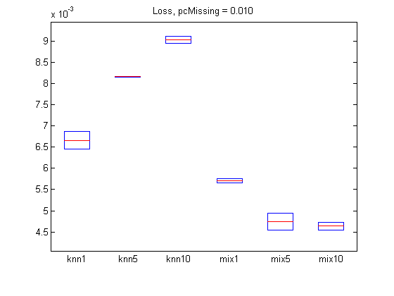
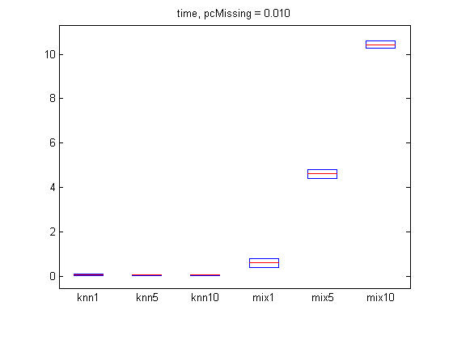
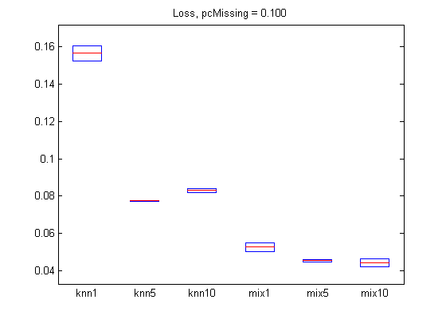
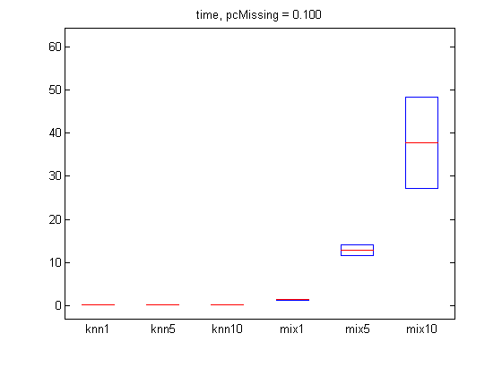

Comparison of methods for imputing missing values in UCI adult census data
PMTKslow PMTKauthor Kevin Murphy PMTKneedsStatsToolbox boxplot
Contents
requireStatsToolbox setSeed(0); adult = loadData('adultCensus'); X = adult.X; types = adult.types; % both binary and multinomial are discrete types(types=='m')='d'; types(types=='b')='d'; X = X(1:1000,:); iscont = (types=='c'); X(:,iscont) = standardize(X(:,iscont)); setSeed(0); [N, D] = size(X); pc = [0.01, 0.1]; ntrials = 2; opts = {'verbose', true}; methodNames = {'knn1', 'knn5', 'knn10', ... 'mix1', 'mix5', 'mix10'}; imputeFns = {@(X)imputeKnnMixed(X, 1), ... @(X)imputeKnnMixed(X, 5), ... @(X)imputeKnnMixed(X, 10), ... @(X)imputeMixGaussDiscrete(X, 1, types, opts{:}), ... @(X)imputeMixGaussDiscrete(X, 5, types, opts{:}),... @(X)imputeMixGaussDiscrete(X, 10, types, opts{:}) }; nMethod = length(methodNames);
For each percentage of missing, do several trials
for pidx = 1:length(pc) errors = zeros(ntrials, nMethod); times = zeros(ntrials, nMethod); for trial = 1:ntrials missing = rand(N,D) < pc(pidx); Xmiss = X; Xmiss(missing) = NaN; for method = 1:nMethod fn = imputeFns{method}; tic fprintf('p %3.5f, trial %d, method %s\n', pc(pidx), trial, methodNames{method}); Ximpute = fn(Xmiss); t=toc; times(trial, method) = t; errors(trial, method) = imputationLossMixed(X, Ximpute, missing, types); end end % Plot figure; boxplot(errors, 'labels', methodNames); title(sprintf('Loss, pcMissing = %5.3f', pc(pidx))); printPmtkFigure(sprintf('imputationMixedAdultError%dpc', pc(pidx)*100)); figure; boxplot(times, 'labels', methodNames); title(sprintf('time, pcMissing = %5.3f', pc(pidx))); printPmtkFigure(sprintf('imputationMixedAdultTime%dpc', pc(pidx)*100)); end
p 0.01000, trial 1, method knn1 p 0.01000, trial 1, method knn5 p 0.01000, trial 1, method knn10 p 0.01000, trial 1, method mix1 initializing model for EM 1 loglik: -25347.9 2 loglik: -15560.3 3 loglik: -15559.3 p 0.01000, trial 1, method mix5 initializing model for EM 1 loglik: -21673.3 2 loglik: -14951.8 3 loglik: -14475 4 loglik: -14143.5 5 loglik: -13900.3 6 loglik: -13715.3 7 loglik: -13595.4 8 loglik: -13524.4 9 loglik: -13490.8 10 loglik: -13464 11 loglik: -13446.7 12 loglik: -13436.3 13 loglik: -13429.3 14 loglik: -13423.5 15 loglik: -13418.1 16 loglik: -13411.6 17 loglik: -13397.1 18 loglik: -13381.7 19 loglik: -13360.4 20 loglik: -13333.6 21 loglik: -13253.8 22 loglik: -13095.4 23 loglik: -12697.8 24 loglik: -12039 25 loglik: -10966.4 26 loglik: -10327.8 27 loglik: -10230 28 loglik: -10209.3 29 loglik: -10192.6 30 loglik: -10190.2 31 loglik: -10190.2 p 0.01000, trial 1, method mix10 initializing model for EM 1 loglik: -20829.4 2 loglik: -14610.3 3 loglik: -13814.3 4 loglik: -13419.1 5 loglik: -13194 6 loglik: -13040.7 7 loglik: -12934.8 8 loglik: -12865.2 9 loglik: -12805 10 loglik: -12757.1 11 loglik: -12720.5 12 loglik: -12684.5 13 loglik: -12638.4 14 loglik: -12591.1 15 loglik: -12538.7 16 loglik: -12463.6 17 loglik: -12313.9 18 loglik: -12033.5 19 loglik: -11732.7 20 loglik: -11326.8 21 loglik: -11106.5 22 loglik: -10714.2 23 loglik: -10460.3 24 loglik: -10357.7 25 loglik: -10206.3 26 loglik: -9490.96 27 loglik: -9051.27 28 loglik: -9004.42 29 loglik: -8987.28 30 loglik: -8961.45 31 loglik: -8952.92 32 loglik: -8950.51 33 loglik: -8946.53 34 loglik: -8939.83 35 loglik: -8927.65 36 loglik: -8922.37 37 loglik: -8920.86 38 loglik: -8919.96 39 loglik: -8919.11 p 0.01000, trial 2, method knn1 p 0.01000, trial 2, method knn5 p 0.01000, trial 2, method knn10 p 0.01000, trial 2, method mix1 initializing model for EM 1 loglik: -24607.8 2 loglik: -15524 3 loglik: -15523.8 p 0.01000, trial 2, method mix5 initializing model for EM 1 loglik: -20313.2 2 loglik: -14887 3 loglik: -14373 4 loglik: -13974.5 5 loglik: -13731.7 6 loglik: -13615.3 7 loglik: -13550.3 8 loglik: -13519.3 9 loglik: -13498.2 10 loglik: -13474 11 loglik: -13465 12 loglik: -13460.1 13 loglik: -13455.2 14 loglik: -13449.9 15 loglik: -13444.1 16 loglik: -13439 17 loglik: -13435.1 18 loglik: -13430.3 19 loglik: -13423.2 20 loglik: -13418 21 loglik: -13414 22 loglik: -13409.2 23 loglik: -13402.9 24 loglik: -13397.1 25 loglik: -13388.9 26 loglik: -13384 27 loglik: -13372.9 28 loglik: -13362.9 29 loglik: -13351.4 30 loglik: -13311.5 31 loglik: -13298.8 32 loglik: -13294.7 33 loglik: -13283.4 34 loglik: -13281.5 35 loglik: -13280.5 p 0.01000, trial 2, method mix10 initializing model for EM 1 loglik: -20031.5 2 loglik: -14219.4 3 loglik: -13602.3 4 loglik: -13214.9 5 loglik: -12989.9 6 loglik: -12899.2 7 loglik: -12853.1 8 loglik: -12823.9 9 loglik: -12804.4 10 loglik: -12785.6 11 loglik: -12765.3 12 loglik: -12736.3 13 loglik: -12707.7 14 loglik: -12674.8 15 loglik: -12636.4 16 loglik: -12586.4 17 loglik: -12514.6 18 loglik: -12421 19 loglik: -12154.9 20 loglik: -11809.8 21 loglik: -11111.7 22 loglik: -9958.79 23 loglik: -8853.57 24 loglik: -8083.75 25 loglik: -7853.85 26 loglik: -7761.8 27 loglik: -7539.39 28 loglik: -7149.74 29 loglik: -6988.41 30 loglik: -6911.3 31 loglik: -6855.04 32 loglik: -6821.39 33 loglik: -6801 34 loglik: -6647.42 35 loglik: -6214.36 36 loglik: -6001.04 37 loglik: -5963.68 38 loglik: -5923.23 39 loglik: -5845.2 40 loglik: -5821.92 41 loglik: -5802.85 42 loglik: -5800.72 43 loglik: -5799.83 44 loglik: -5799.4 p 0.10000, trial 1, method knn1 p 0.10000, trial 1, method knn5 p 0.10000, trial 1, method knn10 p 0.10000, trial 1, method mix1 initializing model for EM 1 loglik: -21831 2 loglik: -16135.7 3 loglik: -16124.5 4 loglik: -16124.3 p 0.10000, trial 1, method mix5 initializing model for EM 1 loglik: -21769.3 2 loglik: -15988.6 3 loglik: -15677.5 4 loglik: -15467.8 5 loglik: -15359.8 6 loglik: -15271.8 7 loglik: -15165.5 8 loglik: -15049.8 9 loglik: -14969 10 loglik: -14907.6 11 loglik: -14841.9 12 loglik: -14770.1 13 loglik: -14673.1 14 loglik: -14506.1 15 loglik: -14277.5 16 loglik: -13785.4 17 loglik: -13127.4 18 loglik: -12443.2 19 loglik: -11826.5 20 loglik: -11251.6 21 loglik: -10888.3 22 loglik: -10820 23 loglik: -10814.1 24 loglik: -10812.7 25 loglik: -10811.4 26 loglik: -10810.1 27 loglik: -10809.1 p 0.10000, trial 1, method mix10 initializing model for EM 1 loglik: -20392.9 2 loglik: -15363.2 3 loglik: -14719.2 4 loglik: -14290.2 5 loglik: -14014.9 6 loglik: -13848.2 7 loglik: -13748.9 8 loglik: -13699 9 loglik: -13670.6 10 loglik: -13652.4 11 loglik: -13636.7 12 loglik: -13623.5 13 loglik: -13606.1 14 loglik: -13580.2 15 loglik: -13545.1 16 loglik: -13425.7 17 loglik: -13144.9 18 loglik: -12777.3 19 loglik: -12277.3 20 loglik: -11737.1 21 loglik: -11254.3 22 loglik: -10851.9 23 loglik: -10590.5 24 loglik: -10427.4 25 loglik: -10243.8 26 loglik: -9983.32 27 loglik: -9793.23 28 loglik: -9555.29 29 loglik: -9362.71 30 loglik: -9210.9 31 loglik: -9099.84 32 loglik: -9009.35 33 loglik: -8925.58 34 loglik: -8865.67 35 loglik: -8822.05 36 loglik: -8792.15 37 loglik: -8777.29 38 loglik: -8769.99 39 loglik: -8766.37 40 loglik: -8760.64 41 loglik: -8759.41 42 loglik: -8758.82 p 0.10000, trial 2, method knn1 p 0.10000, trial 2, method knn5 p 0.10000, trial 2, method knn10 p 0.10000, trial 2, method mix1 initializing model for EM 1 loglik: -22503.8 2 loglik: -16066 3 loglik: -16049.5 4 loglik: -16049.3 p 0.10000, trial 2, method mix5 initializing model for EM 1 loglik: -22606.6 2 loglik: -15611.6 3 loglik: -15286.4 4 loglik: -15098.8 5 loglik: -14901.3 6 loglik: -14713.2 7 loglik: -14591.5 8 loglik: -14516.8 9 loglik: -14467.7 10 loglik: -14441.6 11 loglik: -14431.7 12 loglik: -14424.5 13 loglik: -14418 14 loglik: -14412.4 15 loglik: -14405.2 16 loglik: -14399.4 17 loglik: -14397.2 18 loglik: -14395.7 19 loglik: -14392.6 20 loglik: -14390.5 21 loglik: -14389 22 loglik: -14387.2 23 loglik: -14385.2 24 loglik: -14383.2 25 loglik: -14381 26 loglik: -14378.7 27 loglik: -14376.1 28 loglik: -14373.4 29 loglik: -14371.3 30 loglik: -14370 p 0.10000, trial 2, method mix10 initializing model for EM 1 loglik: -20133.4 2 loglik: -15451.9 3 loglik: -14949.5 4 loglik: -14638.2 5 loglik: -14455.7 6 loglik: -14336.9 7 loglik: -14250.5 8 loglik: -14185 9 loglik: -14139.4 10 loglik: -14097 11 loglik: -14059.6 12 loglik: -14016.6 13 loglik: -13975.5 14 loglik: -13952.3 15 loglik: -13930.8 16 loglik: -13900.9 17 loglik: -13814.6 18 loglik: -13674.3 19 loglik: -13452.8 20 loglik: -12982 21 loglik: -12191.3 22 loglik: -11136.1 23 loglik: -10395.4 24 loglik: -10274.7 25 loglik: -10235.2 26 loglik: -10180.4 27 loglik: -10094.5 28 loglik: -9880.95 29 loglik: -9712.9 30 loglik: -9632.93 31 loglik: -9542.26 32 loglik: -9258.88 33 loglik: -8917.65 34 loglik: -8833.51 35 loglik: -8742.54 36 loglik: -8663.25 37 loglik: -8594.91 38 loglik: -8504.82 39 loglik: -8392.72 40 loglik: -8286.03 41 loglik: -8172.8 42 loglik: -8034.7 43 loglik: -7950.64 44 loglik: -7911.4 45 loglik: -7849.36 46 loglik: -7765.5 47 loglik: -7709.26 48 loglik: -7664.6 49 loglik: -7608 50 loglik: -7591.18 51 loglik: -7577.13 52 loglik: -7567.62 53 loglik: -7562.67 54 loglik: -7557.99 55 loglik: -7553.31 56 loglik: -7548.69 57 loglik: -7544.02 58 loglik: -7539.14 59 loglik: -7533.75 60 loglik: -7527.61 61 loglik: -7521.19 62 loglik: -7514.24 63 loglik: -7506.18 64 loglik: -7496.65 65 loglik: -7487.81 66 loglik: -7478.86 67 loglik: -7458.28 68 loglik: -7448.87 69 loglik: -7448.53   